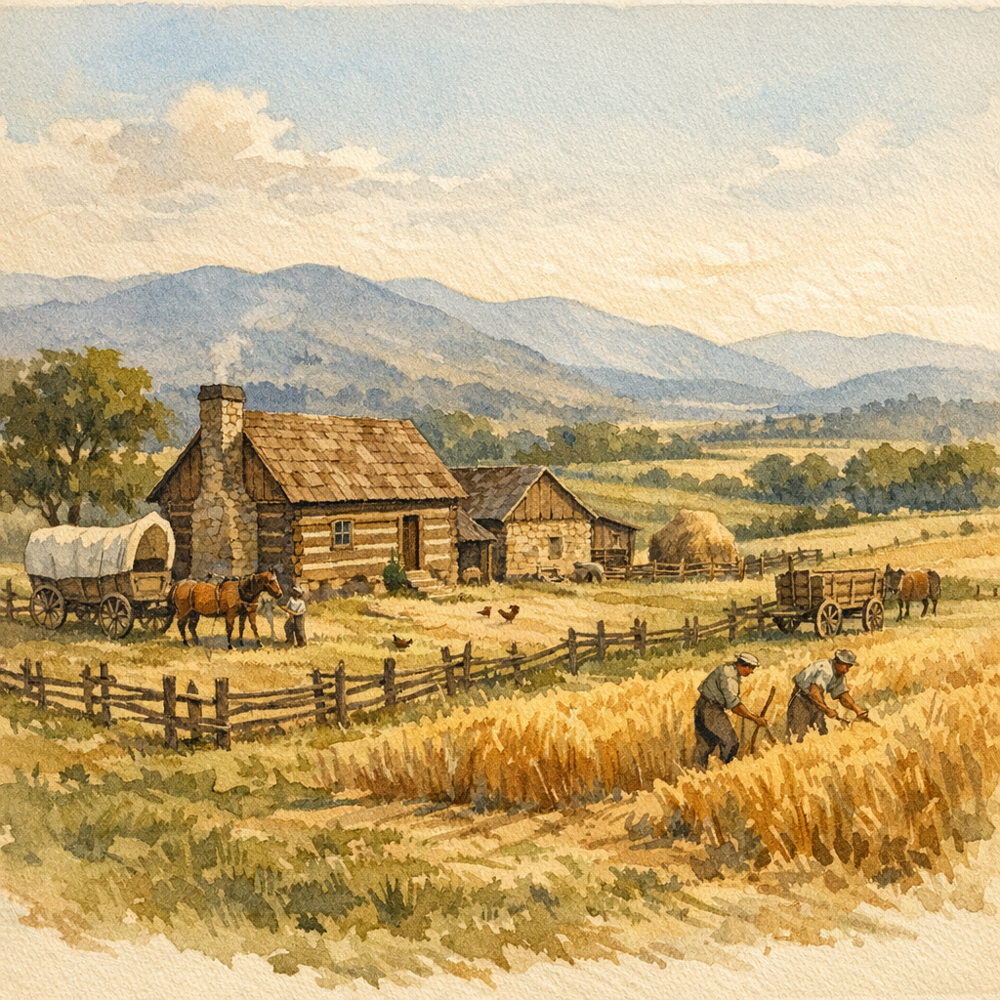

Relationship: 5th great-grandfather (Mowrey line)
Revolutionary War Veteran, Pennsylvania German, Appalachian Pioneer
Peter Mowrey—born Johann Peter Maurer—was born on September 15, 1760 in Philadelphia County, Pennsylvania, to John Peter Maurer (Johann Peter Maurer) and Anna Sophia Germann. The Maurer family had immigrated from Germany, and the surname would gradually Anglicize to Mowrey/Mowery as the family moved through English-speaking frontier communities.
Peter lived only a few years in Pennsylvania before his family moved to Augusta County, Virginia, where many Pennsylvania Germans settled in the Shenandoah Valley.
In the fall of 1780, at age twenty, Peter was drafted into the Augusta County Militia in Virginia. He served in Captain Hays' company, commanded by Captain Thomas Smith, attached to a regiment under Colonel Campbell.
A short time before the Battle of Guilford, Peter joined the Continental Army under General Nathanael Greene and fought in the Battle of Guilford Court House on March 15, 1781—one of the pivotal engagements of the Southern Campaign.
Peter later filed for an invalid's pension from Knox County, Tennessee in 1833. He was pensioned at the rate of $20 per annum, commencing March 4, 1831. His pension application is recorded as S1568.
After the war, Peter remained in Augusta County, Virginia for ten or twelve years (roughly 1781–1793). He then moved to Sullivan County, Tennessee, where he lived about one year, before settling permanently in Knox County, Tennessee, where he would remain until his death.
Peter married at least twice. His first wife's name is recorded in some sources as Gibson (married c. 1782 in Augusta County, VA), though this requires further verification.
On May 4, 1829, Peter married Sophia Clapp in Knox County, Tennessee. There is no evidence of children born to Peter and Sophia; she was likely his companion in his later years.
Peter's will, dated June 16, 1838, names the following children from his earlier marriage(s):
Sons:
Daughters:
Grandsons named in will:
Peter died before February 3, 1840, when his will was presented for probate in Knox County, Tennessee. The will, dated June 16, 1838, is recorded in Knox Estate Book 7, page 17.
In his will, Peter bequeathed to his wife Sophia the dwelling house, outbuildings, and surrounding land on Roseberry Creek, along with household property, kitchen furniture, a horse, plough, and gearing, plus $300 and one cow and calf. The land was to revert to his other heirs after Sophia's widowhood.
The remainder of his land was divided equally among his three surviving sons: Samuel, Lewis, and Moses. Each child and grandchild named received $50 or $25 respectively, with provisions for proportional reduction if funds were insufficient.
Peter appointed Martin B. Carter as sole executor. Witnesses to the will were Joseph Stewart and Winston Carter.
An estate sale and inventory were recorded on February 1, 1840 (Estate Book 7, pages 30-31), with purchasers including widow Sophia Mowrey and Nicholas Clapp (likely Sophia's relative).
Notes:
| Years | Location | |-------|----------| | 1760–c. 1765 | Philadelphia County, PA (birth) | | c. 1765–c. 1793 | Augusta County, VA | | c. 1793–c. 1794 | Sullivan County, TN | | c. 1794–1840 | Knox County, TN |
Last updated: 2026-02-01